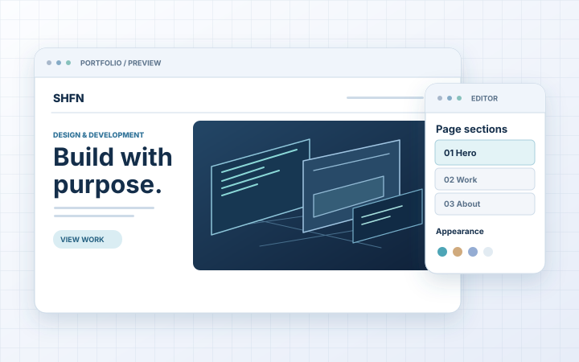
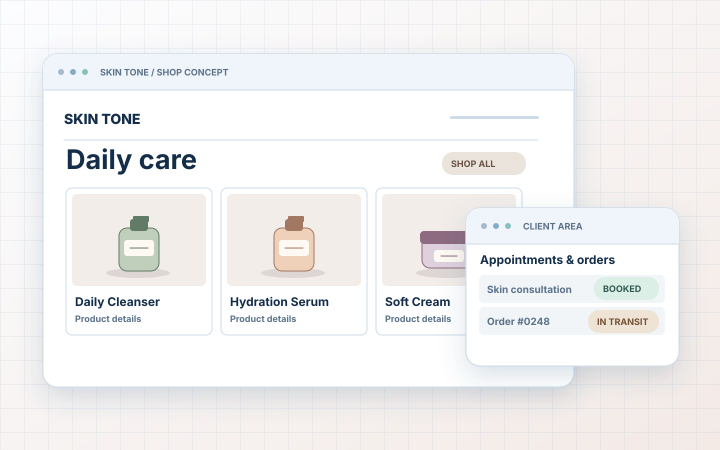
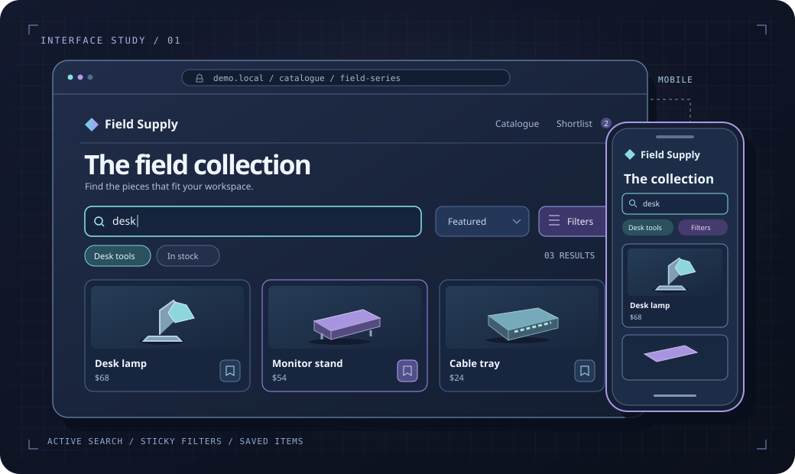

PROJECT BRIEF
DESIGN PREVIEW
Build / Defend Technical Universe
Sharjah, United Arab Emirates
Mohammad Sayyad Shafan
I build web tools that make technical information easier to use. My cybersecurity background shapes how I approach access, validation and the paths people take when something goes wrong.
Selected work
Two ways I put technical detail to work: designing better interfaces and investigating what happens underneath them.

A searchable product catalogue with a cabinet explorer, admin workflows and gated technical downloads.
Visitors need a way to browse part numbers, see cabinet options and find the right document without starting from a long PDF.
I worked on product discovery, mobile layouts and the 360° cabinet experience. I followed the journey from choosing a cabinet to checking compatible options and opening the associated technical document.
I checked the product and cabinet controls on desktop and mobile, and tested that a protected document stayed gated before verification.
Project work · Catalogue UI · 360° interaction · Admin workflows

A responsive, buildless frontend that puts written case studies and a small 3D experience on the same page.
Make the portfolio engaging without asking visitors to download a large library or use a mouse to understand the work.
Plain HTML, CSS and JavaScript. Native disclosures keep each case readable without scripts. The model has a static alternative and controls for viewing it without dragging.
Implementation study · Responsive design · Progressive enhancement

A skincare web application combining a shop catalogue, appointments and order tracking.
Visitors can browse the catalogue, add items to a cart, book an appointment and track an order. Staff use a separate role-based admin area to manage the workflow.
The project uses PHP and MySQL for the application and data, with HTML, CSS and JavaScript for the browser interface.
Project work · Catalogue and cart · Appointment workflow · Role-based admin

Practising packet inspection and alert investigation with Wireshark and Snort in a controlled lab.
Compare a Snort alert with its corresponding packet capture. Review the protocol, direction and timing to understand what the alert can and cannot establish.
The alert is a starting point, not a conclusion. I used the capture to add context and kept observed packet evidence separate from the interpretation.
Lab practice only · No client traffic or production testing presented
UI design breakdown
A design study in making a technical catalogue easier to scan, narrow and inspect on any screen.

Put product families first for visitors who know what they need, and keep part-number search close for those who already have a code.
Show active filters by the results so a shorter list makes sense. Give people a way back when a selection returns no matches.
Cards help people compare at a glance. Put detailed specs on the product page, and keep the next action clear when the layout stacks on mobile.
Interactive demo
Build a page section by section, refine its content and styling, and preview it at desktop, tablet or phone widths. Download a standalone HTML page or save it as a PDF. Your drafts stay in this browser.
Open design workspaceInteractive demos
Three working examples with fictional products and services. Browse them to see how the same catalogue idea adapts to different businesses.
Development capabilities
I choose the stack around the job: easy content updates, a predictable mobile layout, or interactions that need more application logic.
Company sites, service pages and focused catalogues with reusable content sections that staff can update.
Landing pages and accessible interfaces where layouts, navigation and forms work on phones as well as desktops.
Product search and filters, preview tools and dashboard screens with clear loading, empty and error states.
About
I’m Mohammad Sayyad Shafan, a web developer based in Sharjah. My expertise spans PHP and MySQL development, responsive web design, interactive product catalogues, and application security. My pre-sales background helps me turn complex product specifications into clear interfaces that make it easier to compare options and make decisions.
I build searchable catalogues, interactive 3D product views, and admin workflows that are easy to use. In security, I focus on web and API assessments, network traffic analysis, and explaining findings in a way teams can act on.
Contact
For web development and cybersecurity conversations, reach me on LinkedIn.